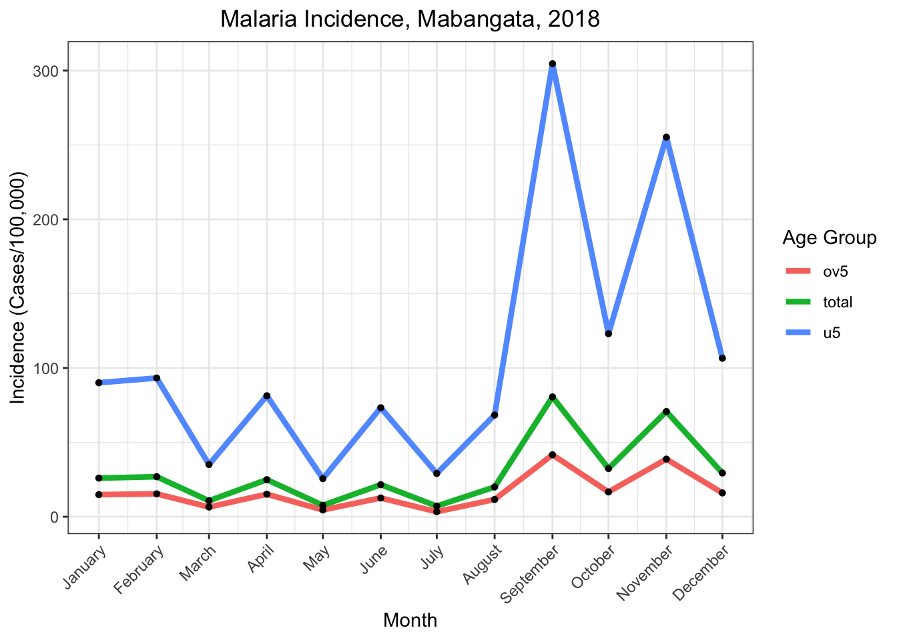
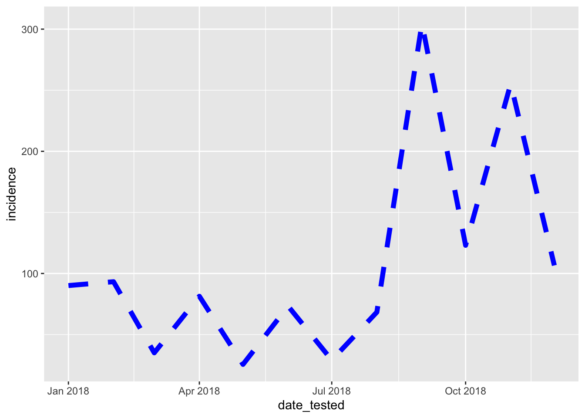
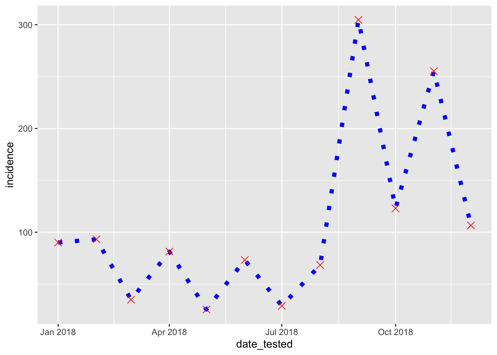
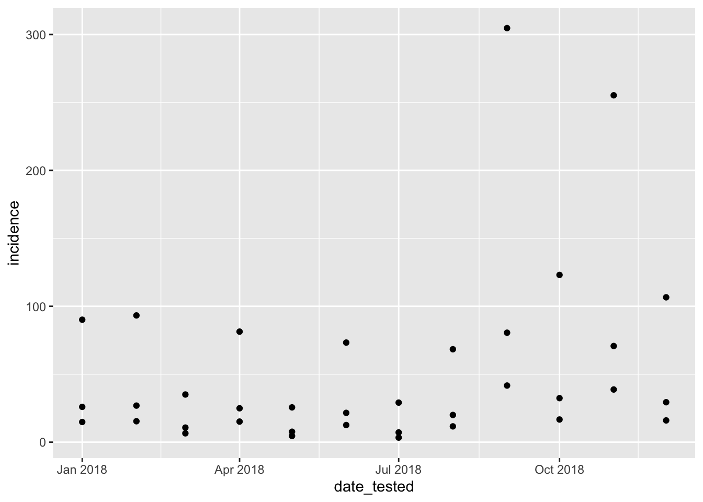
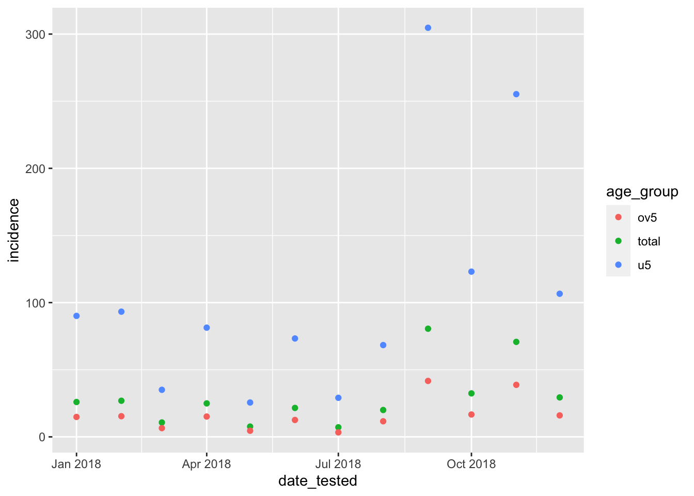

Making Plots with ggplot2
Main Objective
At the end of the training we will be able to produce this plot:
ggplot2: A Layered Approach to Plotting
Aim:
- Learn about the layered approach of ggplot.
- Understand how each layer adds elements to the plot.
The ggplot library is a powerful tool for creating data visualizations in R. It follows a layered approach to building plots, where each layer adds additional elements to the plot. Understanding how ggplot works can help you create sophisticated and informative visualizations.
In ggplot, you start with a base plot and add layers called “geometries”, or geoms. Each layer in ggplot adds a different aspect to the plot, allowing you to customize and enhance the visualization. Once geoms have been added, labels and other customizations can be added in a similar way.
Every plot in ggplot starts with the function ggplot. With no additional information about what to display, it will simply show a grey box:
ggplot()
The ggplot function must include an argument to the dataset we want to plot. Here, we specify that we want to use the df_und5 dataset. But because we have not told the function which columns to plot, it will still only show a grey box:
ggplot(data = df_und5)
Let’s say we want to plot the date_tested and incidence columns, with date_tested on the x axis and incidence on the y axis. For this, we have to use a function called aes(). We’ll explain it later, but for now just type in the code. Now, on top of our grey box, there is a layer showing some line breaks and labels mapping our x and y variables. Progress!
ggplot(data = df_und5, aes(x = date_tested, y = incidence))Now we’re finally ready to add shapes to our plot using geoms. If we want to represent this data using points we use the function geom_point():
ggplot(data=df_und5, aes(x=date_tested, y=incidence)) +
geom_point()As an additional layer on top of this, we use the function geom_line() to add a line plot:
ggplot(data=df_und5, aes(x=date_tested, y=incidence)) +
geom_point() +
geom_line()The order in which you append your geoms to the main ggplot function matters: whatever you list first will go underneath whatever comes next. For example, observe the difference between these two pieces of code and the plots they produce:
ggplot(data=df_und5, aes(x=date_tested, y=incidence)) +
geom_line(size=2) +
geom_point(colour="red", size=4) ggplot(data=df_und5, aes(x=date_tested, y=incidence)) +
geom_point(colour="red", size=4) +
geom_line(size=2)
Note:
It’s easy and fun to switch layers around in ggplot, but watch out for any dangling + signs at the end of your plots! If you leave a + dangling at the end like this, your code will think that you’re still typing your command and won’t show your plot:
ggplot(data=df_und5, aes(x=date_tested, y=incidence)) +
geom_line(size=2) +
geom_point(colour="red", size=4) +Conversely, if you miss a + in the middle, your code will only show you the first part of your plot, then throw an error:
ggplot(data=df_und5, aes(x=date_tested, y=incidence)) +
geom_line(size=2)
geom_point(colour="red", size=4)
Exercise
Change the code below so that the orange points are in front of the blue lines. Watch out for any missing or dangling + signs!
ggplot(data=df_und5, aes(x=date_tested, y=incidence)) +
geom_point(colour="orange", size=4) +
geom_line(colour="blue", size=2)
Solution
ggplot(data=df_und5, aes(x=date_tested, y=incidence)) +
geom_line(colour="blue", size=2) +
geom_point(colour="orange", size=4) Customizing geoms
Aim:
- Adjust the color, size, shape, and linetype of geom features
As we’ve hinted at already in the plots above, you can change the features of your geoms by adding arguments inside of their specific functions. You can see the defaults if you enter these geoms with no additonal arguments:
ggplot(data=df_und5, aes(x=date_tested, y=incidence)) +
geom_line() +
geom_point() Some features, such as color and size, are used by both geom_point() and geom_line():
ggplot(data=df_und5, aes(x=date_tested, y=incidence)) +
geom_line(colour="blue", size=2) ggplot(data=df_und5, aes(x=date_tested, y=incidence)) +
geom_point(colour="blue", size=2) Others are specific to specific geoms, as in the examples below:
Options include “blank”, “solid”, “dashed”, “dotted”, “dotdash”, “longdash”, and “twodash”.
ggplot(data = df_und5, aes(x = date_tested, y = incidence))+
geom_line(colour="blue", size=2, linetype="dashed")
ggplot(data = df_und5, aes(x = date_tested, y = incidence))+
geom_line(colour="red",size=3,linetype="dotted")Shapes can take any number from 1 to 25.
ggplot(data = df_und5, aes(x = date_tested, y = incidence))+
geom_point(colour="blue", size=2, shape=2)ggplot(data = df_und5, aes(x = date_tested, y = incidence))+
geom_point(colour="red", size=3, shape=4)You can layer these as before:
ggplot(data = df_und5, aes(x = date_tested, y = incidence))+
geom_line(colour="blue",size=2,linetype="dotted") +
geom_point(colour="red", size=3, shape=4)
Exercise:
Modify the code below so that:
- the line is orange, dashed, and size 2
- the points are green, shape 16, and size 4
ggplot(data = df_und5, aes(x = date_tested, y = incidence))+
geom_line(colour="blue",size=2,linetype="dotted") +
geom_point(colour="red", size=3, shape=4)
Solution
ggplot(data = df_und5, aes(x = date_tested, y = incidence))+
geom_line(colour="orange",size=2,linetype="dashed") +
geom_point(colour="green", size=4, shape=16)Mapping Aesthetics with the aes() Function
Aim:
- Understand the role of the aes function in ggplot.
- Learn when to use aes to map variables to aesthetics.
In the presentation, we learned that all visualizations are mappings of information from abstract numbers into visual concepts like location, shape, color, etc.
The aes() function is used whenever we want to map variables in our dataset to aesthetic properties such as x and y axes, colors, shapes, etc. It is one of the most confusing aspects of ggplot, but also one of the most powerful once you get used to it.
x and y
aes() can take many arguments (see the documentation for a full list), but you’ve already seen the most crucial ones: x and y. These arguments are always necessary for ggplot to understand which variables to show on the two-dimensional screen.
the aes in the base position and altering the variables of x axis and y axis
ggplot(data = df_und5, aes(x = date_tested, y = incidence)) +
geom_point()
ggplot(data = df_und5, aes(x = incidence, y = date_tested,)) +
geom_point()ggplot(data = df_und5, aes(x = date_tested, y = pop)) +
geom_point()
Exercise
Create a scatter plot using the df_und5 dataset, with date (date_tested) on the x axis and confirmed cases (conf) on the y axis.
Solution
ggplot(data = df_und5, aes(x = date_tested, y = conf)) +
geom_point()Color
To understand mappings beyond x and y, let’s move away from the df_und5 dataset and start using the full df dataset. We can start with a simple scatter plot:
ggplot(data = df, aes(x = date_tested, y = incidence)) +
geom_point( )
Now, instead of a single time series, we have three time series: one for each age group. But it’s hard to differentiate them right now because they’re all the same shape and size. It would be nice if we could make each age group a different color, using the age_group column name. How do you think we could do this?
Let’s try a few options:
ggplot(data = df, aes(x = date_tested, y = incidence)) +
geom_point(colour=age_group)ggplot(data = df, aes(x = date_tested, y = incidence)) +
geom_point(colour="age_group")Neither of these works, because we are mapping a variable in our dataset to a feature of our plot (here, color). So we need to put color inside an aes() function within our geom:
ggplot(data = df, aes(x = date_tested, y = incidence)) +
geom_point(aes(colour=age_group))
A ton of cool things just happened! Ggplot turned each age group a different color, picked some nice default colors, and gave us a helpful legend. We can do the same with a line plot:
ggplot(data = df, aes(x = date_tested, y = incidence)) +
geom_line(aes(colour=age_group))Other Aesthetics
We can take any of the variables we used outside of aes and map them to variables inside of aes:
ggplot(data = df, aes(x = date_tested, y = incidence)) +
geom_point(aes(colour=age_group))
ggplot(data=df,aes(x=date_tested,y=incidence))+
geom_point(aes(shape=age_group))ggplot(data=df,aes(x=date_tested,y=incidence))+
geom_point(aes(size=age_group))ggplot(data=df,aes(x=date_tested,y=incidence))+
geom_line(aes(linetype=age_group))
Exercise:
Create the following plot: 
Solution:
ggplot(data=df,aes(x=date_tested,y=incidence))+
geom_line(aes(size=age_group))
Note
When you map a color to a continuous variable instead of a categorical one, the color scheme changes to something continuous:
ggplot(data = df, aes(x = date_tested, y = incidence, color = incidence)) +
geom_point()
There are many, many ways to customize the colors of your plots. Going into detail is beyond the scope of this workshop.
Mixing and Matching Aesthetics
You can put multiple aesthetics inside of one aes function:
ggplot(data=df,aes(x=date_tested,y=incidence))+
geom_point(aes(size=age_group, colour=age_group))ggplot(data=df,aes(x=date_tested,y=incidence))+
geom_point(aes(size=incidence, shape=age_group))ggplot(data=df,aes(x=date_tested,y=incidence)) +
geom_line(aes(colour=age_group)) +
geom_point(aes(size=incidence, shape=age_group))
Exercise:
In the plot above, why are the points black instead of in color?
Exercise:
- Write a code snippet to create the following plot:

Solution
ggplot(data=df,aes(x=date_tested,y=incidence)) +
geom_line(aes(linetype=age_group)) +
geom_point(aes(color=age_group))
Exercise:
- Write a code snippet to create the following plot:

Solution
ggplot(data=df,aes(x=date_tested,y=incidence)) +
geom_line(aes(color=age_group)) +
geom_point()Customizing Plots for Presentation and Publication
Aim:
Learn how to customize plots for presentation and publication. Adjust plot elements such as titles, labels, themes, and scales.
With our last exercise, we almost created our goal plot for the session:
ggplot(data=df,aes(x=date_tested,y=incidence)) +
geom_line(aes(color=age_group)) +
geom_point()
All that’s left to do is adjust the themes and labeling.
Customizing plots is essential for making them more visually appealing and informative for presentation or publication.
Elements such as titles, axis labels, and themes can be customized to enhance readability and aesthetics. Scales can be adjusted to ensure that the data is displayed in a clear and meaningful way.
There are a number of different built-in themes you can select to modify the background color and overall appearance of your plot.
ggplot(data=df,aes(x=date_tested, y= incidence))+
geom_line(aes(color=age_group)) +
geom_point() +
theme_dark()
ggplot(data=df,aes(x=date_tested, y= incidence))+
geom_line(aes(color=age_group)) +
geom_point() +
theme_bw()You can use the labs function to modify the axis labels, legend labels, and title:
ggplot(data=df,aes(x=date_tested, y= incidence))+
geom_line(aes(color=age_group)) +
geom_point() +
labs(x="Month",
y="Incidence") ggplot(data=df,aes(x=date_tested, y= incidence))+
geom_line(aes(color=age_group)) +
geom_point() +
labs(x="Month",
y="Incidence",
title="Malaria 2018",
color="Age Group")
Exercise:
Create the following plot:

Solution
ggplot(data=df,aes(x=date_tested, y= incidence))+
geom_line(aes(color=age_group)) +
geom_point()+
labs(x="Month",
y="Incidence (Cases/100,000)",
title="Malaria Incidence, Mabangata Region, 2018",
colour="Age Group") +
theme_bw() And there it is! We’ve gone from a set of numbers on a page to a nice, polished figure ready for a presentation.
We’ve only scratched the surface of what you can do with ggplot2 today, but we hope we’ve given you a strong basis and you’ll be able to learn more in the future!